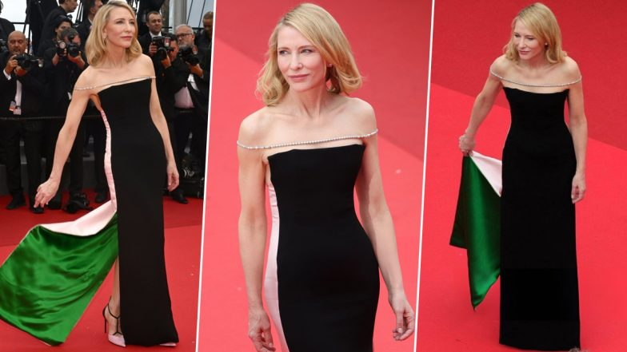

EL VESTIDO QUE FORMÓ LA BANDERA
En la edición 2024 del Festival de Cannes, Cate Blanchett llevó un vestido de Haider Ackermann para Jean Paul Gaultier que, al extender la cola, formaba la bandera palestina sobre la alfombra roja.
El gesto generó elogios y discusión, combinando moda, mensaje político y elegancia. Su aparición fue un ejemplo de cómo la moda puede comunicar un mensaje social poderoso, consolidándola como un ícono de estilo con conciencia.
